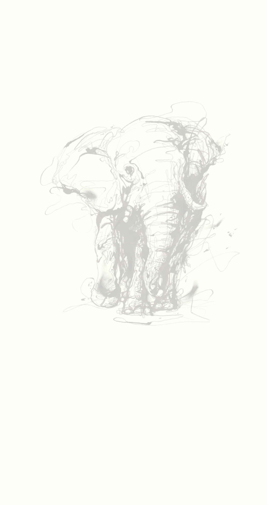
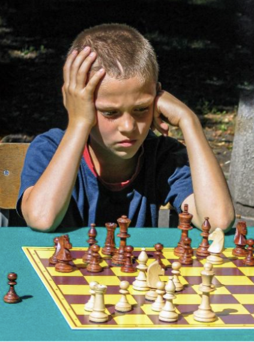
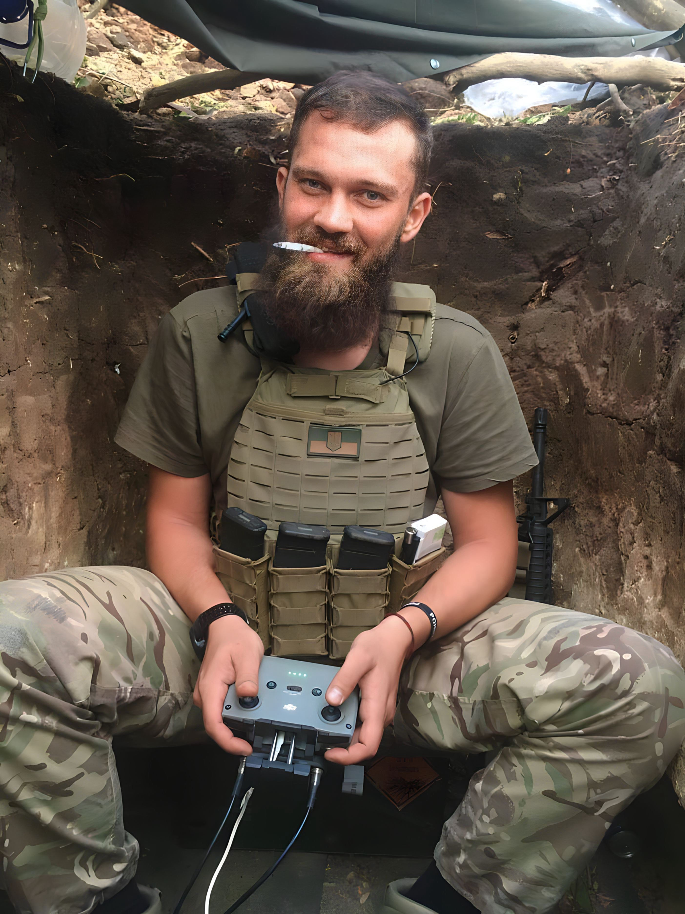
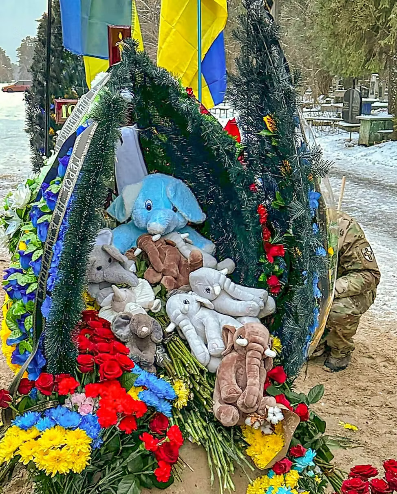
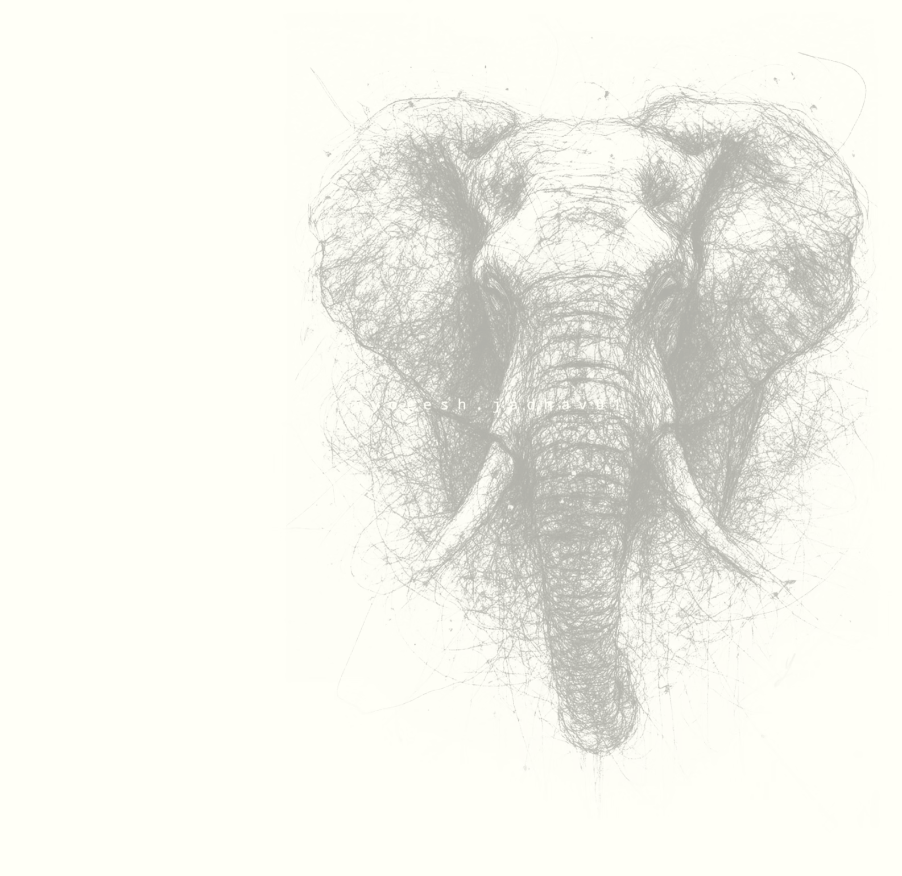

Пам’яті Ігоря Утюжа
Спогади, розповіді, історія життя

Своя людина
У дитинстві Ігор був непосидючим та активним. Такий собі розбишака (у хорошому сенсі) із палаючими очима та вірою, що немає нічого неможливого. Він завжди шукав пригод і з юних років гартував характер, тому у розкладі з'являлися то карате, то джиу-джитсу, то академічна гребля.
З віком до активності додався залізний характер та впертість. А ще любов до людей. Тому Ігоря можна неофіційно назвати майстром спорту з налагодження контактів. У його виконанні це було мистецтво: кілька слів, посмішка — і Ігор вже "своя людина".
Революція Гідності

/Фото ІА «УНІАН»/
Поранення та реабілітація
Служба в АТО
Повернення додому у перший день вторгнення
Служба у Десантно-штурмових військах
Позивний «Слон»
Кохання та війна
Сила, яка тримала родину
Останній бій
Мрії, які продовжують жити
Вічна пам’ять Герою
Дякуємо, Слон. Вічна пам’ять Герою.




